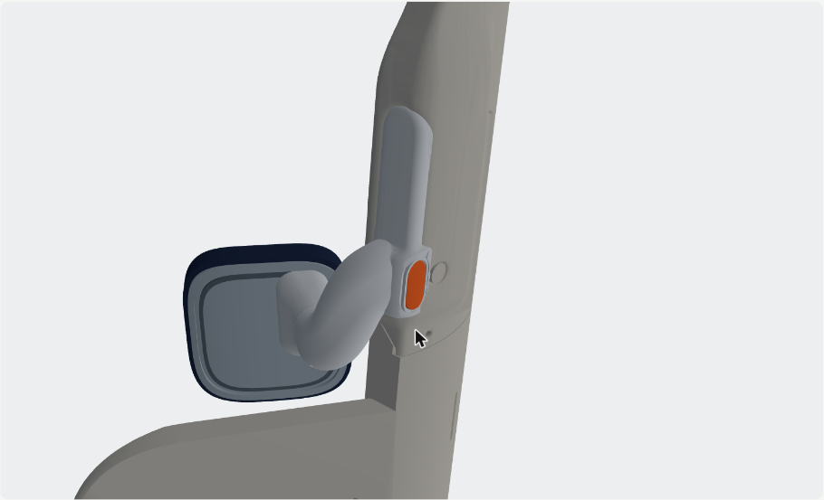
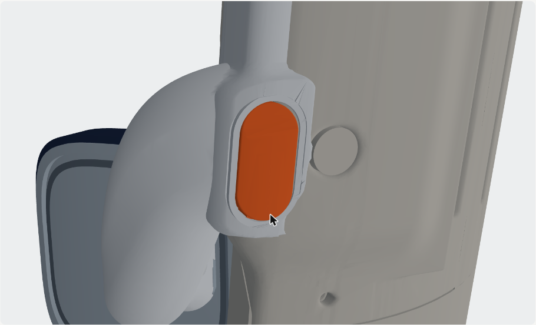
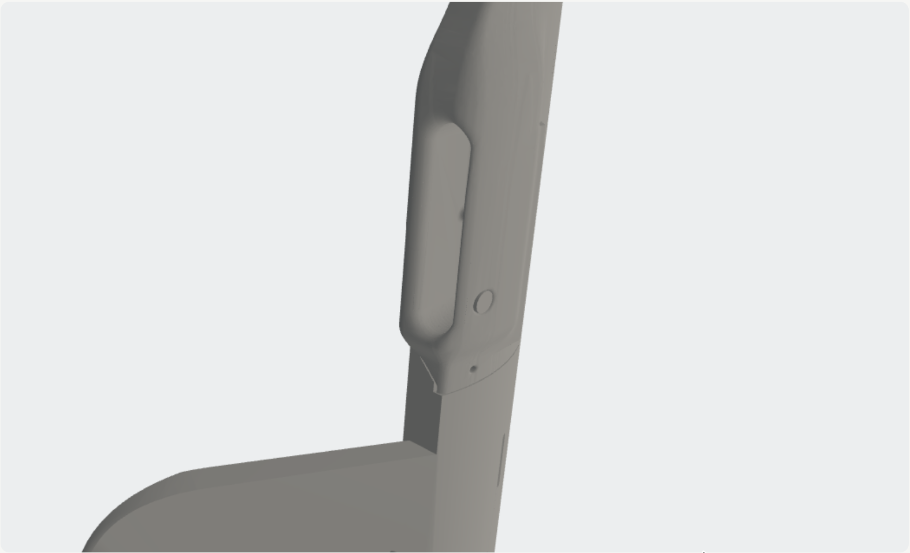
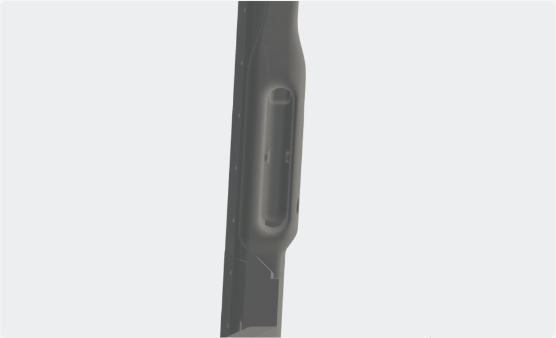
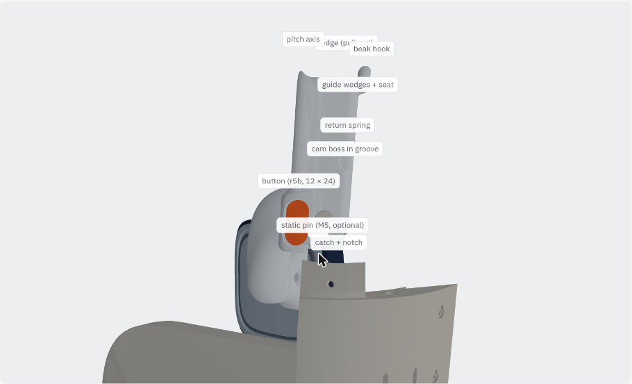
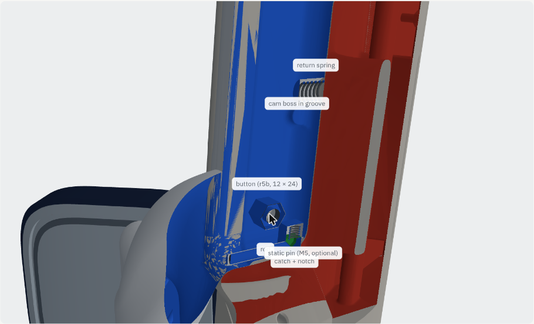
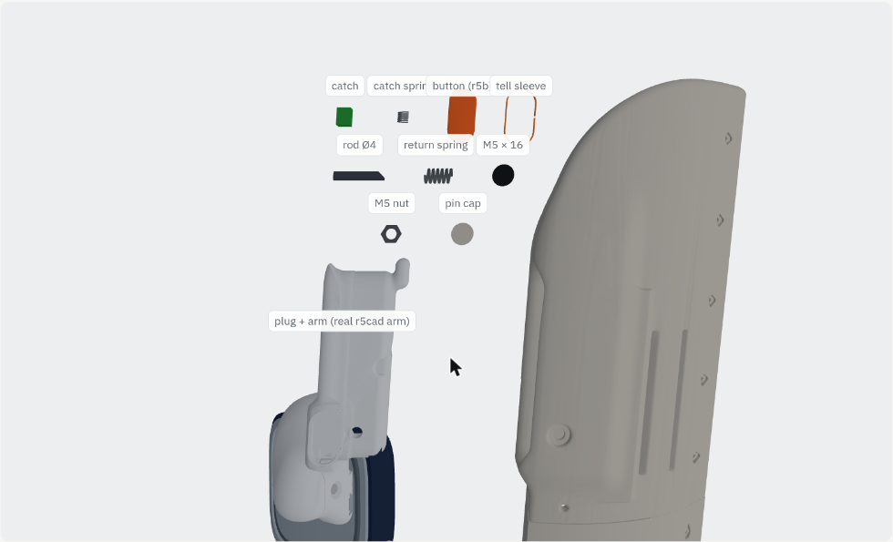
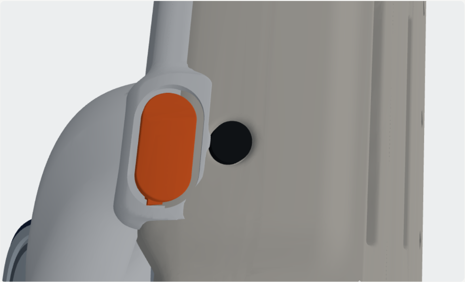

Side pad mount X: the closed exhaust socket
Agreed direction. The wing stays whole. A stadium exhaust mouth sits on the leading edge, inside a closed ring. The arm pushes in from the front, rotates 15° into place (cam-guided, one motion) and clicks; a push button releases it. The kit is the real Onshape arm, carrier, depth piece and pad, unchanged outside. Only the socket end and the inside are new.
1 · The design: real geometry, kit on and off, the inside
Parts: green, the catch; grey, the steel springs and the rod; orange, the button and the tell ring. Section caps: red, the wing; blue, the kit. Labels appear in a section or with the wing see-through. The slider runs 0 → 1 to connect and 1 → 2 to release.








2 · How it works
| Connect (one motion) | Hold the arm tilted 15° nose-up and push the plug into the mouth: the throat centres it. For the last 12 mm, the two cam bosses in the socket walls run in the plug's cam grooves, so the push turns the plug 15° nose-down about a pitch axis at the mouth's top. The beak behind the plug's top rises behind the internal ledge, the tapered rear seats on the guide wedges, and the return spring loads. Click: the steel-spring catch drops 3 mm into its notch (sharp drop-off, hard stop), and the button rises flush: the orange tell sleeve hides. |
| What carries what | Pull-out: the beak on the ledge (plastic, along the layers). Lean and yaw: the socket walls and the collar on the closed ring. Weight: the seat (gravity pulls it towards locked). The cam bosses only guide. The catch only blocks the rotate-back. |
| Release | Press the r5b button with the thumb, pinching against the collar's child-side face. Its 45° cam pushes the Ø4 rod back, and the rod's 45° tip lifts the catch. The preloaded steel return spring turns the arm back 15° along the grooves and nudges it out 3 mm, so it's free; then pull. It only nudges: the arm does not drop. Under a child's lean, the friction on the catch is far larger than the spring force, so it won't release. |
| Why pitch | The plug's two large faces are the socket walls, and pitch is the only rotation the walls allow. Yaw would drive the plug into them, and a round plug (which could spin) would be far weaker. |
3 · Inside: concepts considered
Scored 1 (poor) to 5 (best). D is the design shown on this page.
| Concept | Tongue | Guide | Twist | Click | Strength | Click feel / sound | Guidance (blind, one hand) | Printability | Wear / creep, 200+ cycles | Parts | Total |
|---|---|---|---|---|---|---|---|---|---|---|---|
| A · first X (plain blade) | flat blade 13 | swept walls only | pitch hook + ledge | steel catch | 4 | 3 | 3 | 4 | 4 | 5 | 23 |
| B · I-section on rails | I-section (two flanges + web), slides on long wall rails | full-length rails | hook + ledge | cantilever snap + steel back-up spring | 4 | 4 | 4 | 2 (long rails overhang; tight) | 3 (printed snap creeps) | 4 | 21 |
| C · dovetail key + helical channel | dovetail-keyed blade | helical channel | helix (yaw) | catch + detent | 2 (yaw is blocked by the walls; needs a round core) | 4 | 3 | 2 | 3 | 3 | 17 |
| D · cam-groove blade (chosen) | 17 × 90 blade, ribbed by its two cam grooves | Ø6 boss on each wall in a cam groove | pitch: the last 12 mm of push turns it 15°; hook + ledge | sliding steel-spring catch, sharp drop, hard stop | 5 | 5 | 5 | 4 | 5 (steel springs, wide plastic faces) | 4 | 28 |
Why D: the cam grooves turn "push" into "push + rotate", so the motion finds itself blind, with one hand. The two Ø6 bosses steer it and stiffen the plug's faces like ribs. The pull-out stays on the big beak hook behind the ledge, in plastic. The steel catch only stops the rotate-back, so it clicks crisply without being a structural part. The springs are steel, so nothing printed creeps. Internal support: the closed ring plus the bulge (now up to 7.5 mm per side) give the walls measured below, printed solid around the socket. I preferred that to webs, which would cost wall thickness.
4 · Features, dimensions and clearances
| Feature | Where / size | Clearance or travel |
|---|---|---|
| Mouth + throat | stadium on the leading edge, rolled lip R ≈ 3; throat ≈ 7 mm | sweeps the 15° tilt; collar to lip 0.25 |
| Plug (tongue) | 17 × 90 stadium blade (fine-tuned up from 15 × 80), d′ −1.5..15.5, z 210–300, mouth to t′ 10 (24.3 deep); rear tapered (guide wedges); every edge rounded: rear R ≈ 3, groove edges R ≈ 1, beak R3 with a ≈ 2 mm root fillet | 0.3 per side in the swept pocket |
| Cam bosses + grooves | Ø6 boss 2.5 proud on each socket wall at t′ 6, z 255 (4 mm deeper than before, out of sight from the mouth); a cam groove in each plug face (the boss's path, flared entry at the rear) | 0.25 running clearance in the groove |
| Beak hook + ledge | beak 12 wide behind the plug top (t′ 9.4–15.4, z 286.5–299.5), R2 root; the ledge is the wing above the plug's top, in front of the beak | 0.3; pull-out face square to the motion |
| Catch + notch | steel-spring sliding catch, 11 × 6 × 7.5, drops 3.0 below the plug floor into a notch in the pocket floor | 0.2 per side in its pocket; 3.0 interference; sharp 90° drop-off, hard stop at the notch floor |
| Catch spring | steel, Ø5 × 0.5 wire, above the catch | ≈ 3 N preload, ≈ 5 N lifted |
| Rod | Ø4 along t′ in the plug floor, from the collar to the catch; 45° tip under the catch's 45° ramp | Ø4.4 channel; 3 mm travel |
| Button + tell | the agreed r5b button: 12 × 24 stadium, square push, thumb scoop, 0.8 convex crown, on a pod on the collar's parent side where the thumb lands; the collar's child-side face opposite is the pinch reaction. The r5b split orange tell sleeve shows only when not latched. The stem's 45° cam drives the rod | 4.0 travel (r5b), 0.3 bore |
| Static pin (optional) | M5 × 16 button-head screw (ISO 7380) from the parent side, low and just behind the collar (t′ −4, z 224), so nothing touches the child-side face. It passes through a Ø10.4 counterbore and a Ø5.5 hole in the wing's outer wall into the plug. A real M5 nut sits captive in a hex pocket inside the plug, slid in from the plug's inner face (inside the socket). The tip ends flush with the nut, so nothing protrudes. Unused: a flush printed cap in the counterbore, with a rolled rim. Reach it with a 3 mm hex key from the parent side | Ø5.5 clearance: it only locks the rotate-back and pull-out; the hook, ledge and walls carry the load |
| Return spring | steel, Ø7 × 0.8 wire, in a Ø8.4 pocket at the plug's rear (d′ 6, z 262), preloaded on the pocket's rear wall | ≈ 9 N seated (rotates it back + 3 mm nudge) |
Measured on the model: thinnest wall WALLS mm; socket to strap slit S1 XS1 mm (≥ 6 required); kit x max XKX mm (≤ 165). Slit S1 and the hole column are untouched, and the z 186 hole is re-drilled on its own axis through the bulge (check_features.py: open). Approximate: the springs are drawn at their seated length (scaled in the animation); the button and rod cams are drawn as simple 45° faces.
5 · Strength
| X (300 N; ESTIMATES) | Lean (pad centre) | Corner knock (pad corner) |
|---|---|---|
| First gives | 570 N, arm 22 × 31 (kit) | 348 N, tenon fuse (kit, by design) |
| Wing starts to dent | 774 N (at the catch notch) | 584 N |
| Beak hook on the ledge: load at 300 N → gives at | 190 N → 1783 N | 292 N → 1161 N |
| Ledge shear-out (wing) gives at | 4576 N | 2979 N |
| Catch (rotate-back only): load → gives at | 267 N → 927 N | 347 N → 713 N |
| Cam bosses (guides): load → gives at | 28 N → > 5000 N | 42 N → > 5000 N |
| Tongue (plug at the throat) gives at | 1368 N (2.4 × the arm) | 930 N (2.7 × the fuse) |
| Press / insert force | ≈ 10–12 N press (catch spring through two 45° cams + friction); ≈ 15–20 N to insert (return-spring preload + catch ramp + cam friction). Targets: press 8–12 N, insert ≤ 25 N. | |
The mount is no longer the limit. In a lean the arm (22 × 31) gives first at 570 N. In a corner knock the deliberate tenon fuse gives at 348 N, while the wing holds to 584 N: the wing has 1.68× the fuse load (236 N) in hand. The tongue is never first: it gives only at 1368 / 930 N, 2.4× the arm and 2.7× the fuse.
Strength features: decided
- Arm: stays as r5b, 22 × 31. No carbon tube for now; it is a fallback only if the load test shows a need. If it's added later, size it so the arm still gives before the wing (about 700 N or less in a lean, against the wing's 774 N). Rules for the tube, if it is ever designed in:
- Optional, and inserted after printing through an entry hole or slot in the arm.
- Held by crush ribs or another positive retention, so it can't slide out.
- The entry is closed or finished (a flush cap, or hidden inside the socket or collar), never a bare open hole.
- The arm looks and works the same with or without the tube.
- Its length goes in the rod cutting gauge.
- Prongs: no Ø8 prongs on X. The plug rotates as it seats, and they aren't needed.
- Tenon: the tenon's 4 × Ø2 carbon pins stay. They are the fuse.
Strength: how we got here
Method, the same throughout (sf_r5b.py → tall.py → h2h_strength.py → x_strength.py → xi_strength.py):
- Loads: 300 N lean at the pad centre and 300 N knock at each pad corner, in all 8 arm, kit and pad settings. The lever to the mount reference is 81–97 mm for a lean and 45–145 mm for a corner.
- Model: the CAD agent's r5b contact model, a rigid kit on bearing-only Winkler springs (k 400 N/mm³) with zero fit gaps.
- Allowables: PETG 40 / 22 / 25 MPa (along the layers / shear / bearing), with Kt at the roots.
- First gives = 300 N × the lowest safety factor. These are hand estimates, not FEA.
- Target: the original was SF 3 at 300 N (900 N). It was rescoped to "a reprintable kit part gives before the wing".
| Design | First gives, lean / corner (N) | What gives | Wing dents at, lean / corner (N) |
|---|---|---|---|
| A · r5b as built | 240 / 170 | wing (slot wall) | 240 / 170 |
| B · A + 2 Ø8 prongs (rough, prong-share estimate) | 480–780 / 330–540 | tongue (kit) | n/a |
| C · tall tongue 64 + R2 + Ø2 rods | 483 / 345 | wing | 483 / 345 |
| D · C + 2 Ø8 prongs (prong-share estimate) | 570 / 348 | arm / tenon fuse (kit) | 735–750 / 525 |
| F · tall tongue 80 + R2 + rods | 554 / 348 | tongue / tenon fuse (kit) | 716 / 488 |
| F + 2 Ø8 prongs (contact patches) | 570 / 348 | arm / tenon fuse (kit) | 812 / 560 |
| S · side twist-in (Ø33 bayonet) | 128 / 90 | lugs (kit), wing next | 393 / 273 |
| X first version | 570 / 348 | arm / tenon fuse (kit) | 723 / 523 |
| X final (this page) | 570 / 348 | arm / tenon fuse (kit) | 774 / 584 |
Checked against the outputs: tall_tongue.md (A–D, first-gives table corrected 2026-11-20), h2h_strength.json (F, S), x_strength.json (X first version) and xi_strength.json (X final, after the fine-tune: blade 17 × 90). Corrections to the brief: D's corner figure is 348 N (300 × 1.16; the earlier table rounded it to 350), and its wing dent is 735–750 / 525 N. B's figures are a range (it depends on the prong share), and the tongue gives first, not the wing. A and S were checked against the outputs and are unchanged.
6 · Printability
| Wing | Prints upright, as now. The socket axis is horizontal. The throat and pocket ceilings get a 45° teardrop roof in the CAD (the mesh here still has round tops, which a printer bridges as ≤ 15 mm arcs). The ledge's underside and the beak recess top are ≤ 45° from vertical. The cam bosses are short horizontal pins, with a 45° teardrop top in the CAD. The catch notch is ≤ 11 mm wide, so its roof bridges in ≤ 11 mm. No supports are needed inside the wing. The hook load runs along t′, in the layer plane. Print solid (a modifier volume) for 8 mm round the socket. |
| Carrier with the plug | On its side (d′ down). The plug blade, beak and grooves then lie in the layer plane, so the hook and plug bend along the layers. The grooves face up and down (no overhang). The catch, rod and spring pockets are vertical holes (they print). |
| Catch | Flat on its large face; the drop-off edge stays sharp. |
| Button + tell sleeve | The r5b parts, printed as r5b (cap down). |
| Static pin | Stock M5 × 16 button head and M5 nut (no printed threads). The counterbore and hole are horizontal: the Ø5.5 hole bridges, and the Ø10.4 counterbore gets a 45° teardrop top in the CAD. The cap prints flat. |
| Steel | The catch spring, the return spring and the Ø4 rod (steel or carbon rod). |
7 · How click-and-pop connections work, and our tolerances
Camera lens bayonet
A spring pin drops into a hole at the end of the turn. The button pulls the pin back, so release is "hold the button and turn back". We borrow: lugs carry the load, a spring catch only stops the turn back, and release takes two actions.
Quad Lock phone mount
Push in at an angle and twist to lock. Press the collar or lever and twist back to release. Their "dual-stage lock" is built for vibration and impacts. We borrow: the start-turned-then-rotate motion and a release you can't trigger by accident.
ISOFIX child-seat connector
Push straight in: an audible click and a red/green indicator. Press the button to release. We borrow: the push-and-click, and a visible tell (our orange ring that hides when locked).
| X, mapped to these | |
|---|---|
| Lead-in and guides | rolled mouth, throat, swept guide faces, cam bosses and grooves, wedges |
| What carries the load | the blade in the closed ring; the beak on the ledge |
| Springs | steel only (catch spring, return spring): printed spring arms creep |
| Button | retracts the catch through a 45° cam, the Ø4 rod and a second 45° cam |
| Eject | a small nudge (3 mm, 15° back); it unlatches without dropping the arm |
| Who can reach the button | it is on the collar's parent side, out of the child's reach behind the wing and the pad |
| Tolerance (PETG, FDM; starting points, confirm with a coupon) | Typical | X (planned) |
|---|---|---|
| Sliding fit, per side | 0.2–0.3 mm | plug in pocket 0.3; collar to lip 0.25; button 0.3 (r5b); catch 0.2; static pin Ø5.5 for M5 |
| Running gap (guides) | 0.2–0.4 mm | boss in groove 0.25; rod in channel 0.2 |
| Click interference, with a ramp | ≈ 0.5–1 mm | catch drop 3.0 (spring-driven, not a flexing snap), entry ramp, sharp 90° drop-off |
| Fillets at loaded roots | generous | beak root R2, lip R ≈ 3, guide edges R ≥ 1.5 |
| Print orientation | loads not across layers | see Printability |
| Coupon | ±0.05–0.1 mm steps | the latch coupon: press 8–12 N, insert ≤ 25 N, pull-out ≥ 600 N, 200 cycles, wobble ≤ 0.5 mm at 60 mm |
Sources: QIDI snap-fit clearance guide · OpenAT design guide: snap fits · Slant 3D: tolerances (video) · Connecting 3D-printed parts · Quad Lock how-to (Thule) · Lens mount (Wikipedia) · ISOFIX (carwow) · Core77
8 · Open items
- CAD: model D in Onshape (not started; nothing is being built yet). This includes the 45° teardrop roofs (the mesh still has round tops) and the cam bosses' teardrop tops.
- Coupon: test the catch drop, the cam groove clearance and the boss-in-groove feel in the latch coupon: press 8–12 N, insert ≤ 25 N, pull-out ≥ 600 N, 200 cycles, wobble ≤ 0.5 mm at 60 mm.
- Springs: pick the catch spring (≈ 3 N preload) and the return spring (≈ 9 N seated). Check the return torque against the pad's weight, which pulls it towards locked.
- Thin wall: the thinnest wall is 4.6 mm at the top of the pocket, by the beak recess (6.1–7.1 mm elsewhere). Thicken it locally if the coupon shows creep.
- Pin screw stock: check that M5 × 16 button heads are in the home stock; an M5 × 12 needs a counterbore 4 mm deeper.
- Load test: run it, then decide on the arm carbon tube. If the tube is added, it follows the tube rules above (optional, fitted after printing, held by crush ribs, entry closed, the arm looks and works the same, length in the rod cutting gauge), and the arm must still give before the wing.
- Estimates: all strength numbers are hand estimates on the contact model; they still need a test.